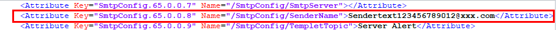

功能介绍
您可以通过“配置更新”界面实现服务器BMC、BIOS和RAID控制器配置文件的导入和导出。

- 仅管理员用户可进行配置导入或配置导出操作，导入或导出的配置文件格式为“.xml”，最大不超过1MB。
- 在KVM开启的情况下，不支持导入关于KVM加密功能的设置。仅KVM加密功能的设置受此条件限制，不影响其他特性配置的导入。
- RAID控制器配置需在系统POST完成之后导出才有效。
- 当导入配置项涉及修改TLS版本、网络配置时，可能导致Web连接断开，Web提示“导入失败”，此时需重新登录BMC查看操作日志确认是否导入成功。
- 在导出的配置文件中，如果某个配置项默认为密文，在导入其他服务器时无法生效。若需要在其他服务器上导入该配置项信息，则需要将配置文件中对应信息修改为明文，并删除该行注释符后才能支持导入生效。
- 导出的配置文件不体现BMC管理网口的IP地址信息。
- 仅支持导入导出BMC配置、BIOS配置和部分的RAID控制器配置。
导入配置文件

配置文件导入属于高危操作，请谨慎处理。
- （可选）编辑配置文件。
- 使用文本工具打开待导入的配置文件并找到需要编辑的配置项。
- 编辑配置项信息。
下面以“SenderName”为例进行说明，如图1所示。将“SenderName”的值由“******”改为实际的字符串，例如“Sendertext123456789012@xxx.com”。
- 将“SenderName”参数前后的注释标识“<!--”和“-->”删除。图2 编辑后的配置文件

- 保存修改。
- 单击"配置导入"区域的“添加文件”，并选择要上传的配置文件。
文件上传后，显示在"配置导入"区域。
支持导入的配置文件格式为“.xml”，最大不超过1MB。
- 单击“导入”。
弹出操作确认对话框。
- 输入当前用户的登录密码并单击“确定”。
导入成功后，弹出对话框提示以下信息：
导入成功，BIOS配置需要重启业务系统生效。
- BMC配置项和RAID控制器配置项导入后立即生效。
- BIOS配置项导入后，需要重启服务器操作系统才能生效。
- 若选择“稍后重启”，您可以在合适的时间重启服务器操作系统。
- 若选择“立即重启”，则将跳转到服务器上下电界面，您可以根据实际情况选择合适的方式重启服务器操作系统。
RAID控制器配置项中，仅支持“回拷”、“SMART错误时回拷”和“JBOD模式”参数项的配置导入。不包括逻辑盘和物理盘等其他参数的配置导入。
导出配置文件
- 单击“配置更新”页面中的“导出”。
文件开始导出并自动保存到本地PC默认路径。